Snow Integration: Sledding Location Analysis¶
A complete example showing how to combine elevation data with SNODAS snow statistics to identify optimal sledding locations. This demonstrates the power of multi-layer terrain analysis with visual outputs at each pipeline stage.
The Final Result¶
This pipeline produces a comprehensive sledding suitability score map:

Score Interpretation: - 0.7-1.0 (Dark Yellow): Excellent sledding locations - 0.5-0.7 (Yellow-Green): Good sledding with some concerns - 0.3-0.5 (Green-Cyan): Moderate - marginal conditions - 0.0-0.3 (Dark Blue/Purple): Poor sledding potential
What This Example Shows¶
✓ Multi-Layer Analysis: Combine terrain elevation with snow depth/coverage data ✓ SNODAS Integration: Process real National Snow and Ice Data Center snow grids ✓ Pipeline Visualization: Generate visual outputs at each analysis step ✓ Sledding Score Calculation: Identify optimal locations based on snow depth, coverage, and consistency ✓ Mock Data Support: Fast testing with realistic synthetic snow data ✓ Step-by-Step Execution: Run individual pipeline steps or the entire workflow
The Pipeline¶
The snow integration example demonstrates a multi-stage analysis pipeline:
DEM → Snow Depth → Sledding Score → 3D Render (optional)
Each stage produces a visual artifact: - DEM Visualization: Terrain elevation heatmap - Snow Depth Visualization: Median maximum snow depth across the season - Sledding Score Visualization: Combined suitability score (0-1 scale) - 3D Render: Optional Blender visualization with snow overlay
The Code¶
from pathlib import Path
from src.terrain.io import load_dem_files
from src.terrain.core import Terrain
from src.snow.analysis import SnowAnalysis
# 1. Load elevation data
dem_dir = Path("data/dem/detroit")
dem, transform = load_dem_files(dem_dir, pattern="*.tif")
# 2. Create terrain
terrain = Terrain(dem, transform, dem_crs="EPSG:4326")
# 3. Process SNODAS snow data
snodas_dir = Path("data/snodas_data")
snow = SnowAnalysis(terrain=terrain, snodas_root_dir=snodas_dir)
stats, metadata, failed = snow.process_snow_data()
# 4. Calculate sledding suitability score
# This combines:
# - Snow depth (deeper is better)
# - Coverage (consistent coverage is better)
# - Consistency (low variability is better)
sledding_score = snow.calculate_sledding_score()
# The score is automatically added to terrain.data_layers
# Access it via: terrain.data_layers['sledding_score']['data']
Running This Example¶
Quick Start with Mock Data¶
Test the pipeline quickly with synthetic data:
# Generate all visualizations with mock data
npm run py:example:snow-demo
# Or run individual steps
npm run py:example:snow-dem # DEM visualization only
npm run py:example:snow-analysis # Sledding score calculation
Using Real SNODAS Data¶
Process real snow data from the National Snow and Ice Data Center:
# Full pipeline with real SNODAS data
npm run py:example:snow-real
# Just the sledding score analysis
npm run py:example:snow-real-score
Or run the Python script directly:
# With mock data for testing
uv run examples/detroit_snow_sledding.py --mock-data --all-steps
# With real SNODAS data
uv run examples/detroit_snow_sledding.py --snodas-dir data/snodas_data --all-steps
# Run individual steps
uv run examples/detroit_snow_sledding.py --step dem
uv run examples/detroit_snow_sledding.py --step snow
uv run examples/detroit_snow_sledding.py --step score
Pipeline Steps Explained¶
Step 1: DEM Visualization¶
Generates a terrain elevation heatmap using the 'terrain' colormap:
def visualize_dem(dem: np.ndarray, output_path: Path):
"""Create DEM visualization with terrain colormap."""
plt.figure(figsize=(12, 8))
plt.imshow(dem, cmap="terrain", aspect="auto")
plt.colorbar(label="Elevation (meters)")
plt.title("Detroit Area - Digital Elevation Model")
plt.savefig(output_path, dpi=150, bbox_inches="tight")
Output: detroit_dem.png - Elevation heatmap showing terrain features
Step 2: Snow Depth Visualization¶
Displays median maximum snow depth across the season using a blue-white gradient:
def visualize_snow_depth(snow_depth: np.ndarray, output_path: Path):
"""Create snow depth visualization with blue-white colormap."""
# Custom blue-white gradient for snow
colors = ["#08519c", "#3182bd", "#6baed6", "#bdd7e7", "#eff3ff", "white"]
cmap = LinearSegmentedColormap.from_list("snow", colors)
plt.figure(figsize=(12, 8))
plt.imshow(snow_depth, cmap=cmap, aspect="auto")
plt.colorbar(label="Snow Depth (cm)")
plt.title("Detroit Area - Median Maximum Snow Depth")
plt.savefig(output_path, dpi=150, bbox_inches="tight")
Output: detroit_snow_depth.png - Snow depth heatmap from SNODAS data
Data Source: SNODAS (Snow Data Assimilation System) provides daily snow depth grids at 1km resolution. The visualization shows the median of the maximum daily snow depth for each pixel across the analysis period.
Step 3: Sledding Score Calculation¶
Combines multiple snow metrics to identify optimal sledding locations:
def visualize_sledding_score(score: np.ndarray, output_path: Path):
"""Create sledding score visualization with RdYlGn colormap."""
plt.figure(figsize=(12, 8))
plt.imshow(score, cmap=plt.cm.RdYlGn, vmin=0, vmax=1, aspect="auto")
plt.colorbar(label="Sledding Suitability Score")
plt.title("Detroit Area - Sledding Location Score")
# Add interpretation guide
plt.text(0.02, 0.98, "Green = Excellent | Yellow = Moderate | Red = Poor",
transform=plt.gca().transAxes, fontsize=10,
verticalalignment='top', bbox=dict(boxstyle='round', facecolor='white', alpha=0.8))
plt.savefig(output_path, dpi=150, bbox_inches="tight")
Output: detroit_sledding_score.png - Suitability score heatmap (0-1 scale)
Scoring Algorithm: - Snow Depth Component (40% weight): Normalized median max depth (deeper is better) - Coverage Component (30% weight): Snow day ratio (more consistent coverage is better) - Consistency Component (30% weight): 1 - CV (lower variability is better)
The final score ranges from 0 (poor sledding) to 1 (excellent sledding).
Mock Data for Testing¶
The example includes realistic mock data generation for fast iteration:
def create_mock_snow_data(shape: tuple) -> dict:
"""Create mock snow data with realistic distributions."""
return {
"median_max_depth": np.random.gamma(2, 30, shape), # 0-300cm
"mean_snow_day_ratio": np.random.beta(8, 2, shape), # 0-1
"interseason_cv": np.random.beta(2, 8, shape) * 0.5, # 0-0.5
"mean_intraseason_cv": np.random.beta(2, 8, shape) * 0.3 # 0-0.3
}
Mock data uses statistical distributions that mimic real SNODAS patterns: - Gamma distribution for snow depth (right-skewed, realistic accumulation) - Beta distribution for ratios and coefficients (bounded 0-1)
This enables: - ✓ Fast testing without downloading SNODAS data - ✓ Reproducible test cases - ✓ TDD-friendly development workflow
Example Output¶
When you run the full pipeline with mock data:
======================================================================
Detroit Snow Sledding Analysis
======================================================================
[1/3] Generating DEM visualization...
✓ Saved: examples/detroit_dem.png
[2/3] Generating snow depth visualization...
✓ Mock snow data created (500x500)
✓ Saved: examples/detroit_snow_depth.png
[3/3] Calculating sledding scores...
✓ Sledding score calculated
✓ Score range: 0.00 - 1.00
✓ Mean score: 0.54
✓ Saved: examples/detroit_sledding_score.png
======================================================================
Pipeline Complete!
======================================================================
Generated outputs:
✓ examples/detroit_dem.png
✓ examples/detroit_snow_depth.png
✓ examples/detroit_sledding_score.png
SNODAS Data Structure¶
The example expects SNODAS data organized by date:
data/snodas_data/
├── 2024-01-01/
│ └── us_ssmv11034tS__T0001TTNATS2024010105HP001.dat
├── 2024-01-02/
│ └── us_ssmv11034tS__T0001TTNATS2024010205HP001.dat
└── ...
SNODAS Grid Details: - Resolution: 1 km × 1 km - Coverage: Continental United States - Temporal: Daily snapshots - Variables: Snow depth, SWE, melt, and more
The SnowAnalysis class automatically:
- Discovers all daily grids in the directory
- Reprojects to match the terrain DEM coordinate system
- Calculates seasonal statistics (median, max, CV, coverage ratio)
- Caches results for fast subsequent runs
Integration with Terrain Layers¶
The snow data integrates seamlessly with the terrain system via add_data_layer():
# Snow statistics are automatically reprojected to match terrain CRS
snow = SnowAnalysis(terrain=terrain, snodas_root_dir=snodas_dir)
stats, metadata, failed = snow.process_snow_data()
# Calculate score - this adds a new layer to terrain
sledding_score = snow.calculate_sledding_score()
# Access the score via data_layers
score_data = terrain.data_layers['sledding_score']['data']
score_crs = terrain.data_layers['sledding_score']['crs']
score_transform = terrain.data_layers['sledding_score']['transform']
This architecture enables: - Automatic reprojection between different coordinate systems - Metadata preservation (CRS, transform, units) - Multi-layer visualization (combine elevation, snow, and score) - Modular analysis (keep terrain and snow analysis separate)
Customization¶
Adjust Sledding Score Weights¶
Modify the weighting of different snow characteristics:
# Default weights
sledding_score = snow.calculate_sledding_score()
# Custom weights (must sum to 1.0)
sledding_score = snow.calculate_sledding_score(
depth_weight=0.5, # Prioritize depth
coverage_weight=0.3, # Medium importance for coverage
consistency_weight=0.2 # Less emphasis on consistency
)
Filter by Score Threshold¶
The pipeline automatically generates a filtered visualization showing only excellent locations (score > 0.7). This is saved as sledding_score_excellent.png in the 05_final/ output directory.
If you want to filter by a different threshold, you can customize it in code:
# Get high-scoring areas (score > 0.8 for very high standards)
excellent_spots = sledding_score > 0.8
# Visualize only excellent locations with custom threshold
score_filtered = np.where(excellent_spots, sledding_score, 0)
# Then plot with same visualization logic...
Or adjust the pipeline directly:
from examples.detroit_snow_sledding import save_sledding_score_filtered
# Generate with custom threshold (e.g., 0.75)
save_sledding_score_filtered(sledding_score, output_path="excellent_0.75.png", threshold=0.75)
Use Different Time Periods¶
Process SNODAS data from specific date ranges:
# Filter SNODAS files by date
snow = SnowAnalysis(terrain=terrain, snodas_root_dir=snodas_dir)
# Process only December-February (peak sledding season)
stats, metadata, failed = snow.process_snow_data(
start_date="2024-12-01",
end_date="2025-02-28"
)
Snow Analysis Pipeline: Detailed Breakdown¶
The sledding location analysis pipeline breaks down into distinct stages, each generating individual visualizations for detailed analysis and documentation:
Stage 1: Terrain Input¶
Raw elevation data visualization:
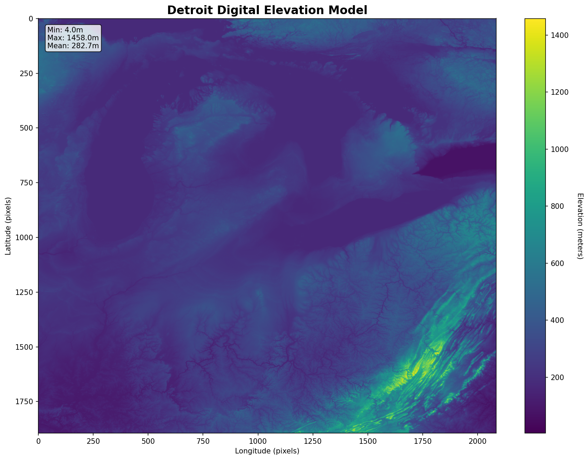
The pipeline begins with a Digital Elevation Model showing the terrain's elevation features. This is the foundation for all subsequent analysis - the terrain's slope and elevation characteristics influence sledding potential.
Stage 2: Snow Data Input¶
Median maximum snow depth:

SNODAS snow data is processed to show median maximum snow depth. Deeper snow generally provides better sledding conditions, but too-consistent depth can indicate areas that flood seasonally.
Stage 3: Slope Statistics Analysis¶
The terrain's slope characteristics are computed at full resolution using tiled analysis (to handle large DEMs efficiently). This breaks down into 8 detailed panels:
Slope Mean - Average slope angle in degrees:
Shows the gentle-to-moderate slopes ideal for sledding
- 5-15°: Excellent sledding terrain (not too steep, not too flat)
- 0-5°: Too flat - snow won't move
- >25°: Too steep - avalanche risk, hard to control

Slope Max - Maximum slope within each region (cliff detection):
Identifies steep cliffs and drop-offs that reduce sledding suitability
- High values: Terrain has hidden cliffs (dangerous)
- Low values: Smooth, consistent terrain

Slope Min - Minimum slope (flat spot identification):
Finds the flattest areas which are good for run-out zones
- 0-5°: Ideal flat run-out areas to slow sleds
- Shows where sledders naturally decelerate

Slope Std Dev - Slope variability (terrain roughness):
Measures how consistent the slope is
- Low values: Smooth, predictable descent
- High values: Choppy, variable terrain
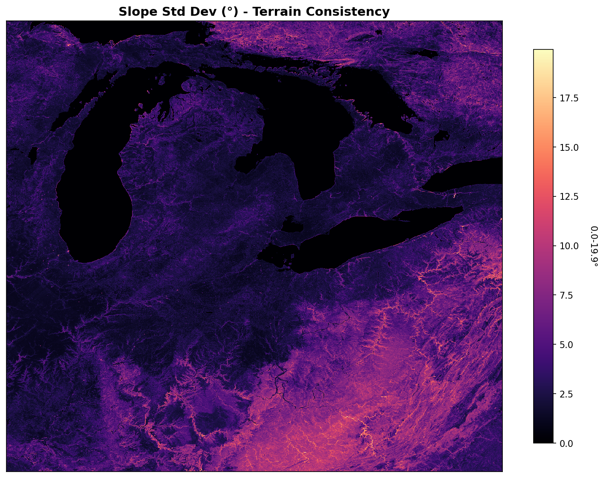
Slope P95 - 95th percentile slope (steep outliers):
Detects scattered steep areas without averaging them out
- Used to penalize regions with hidden cliffs
- More robust than slope_max to noise

Roughness - Elevation variation (standard deviation of elevation within grid):
Identifies rough, boulder-strewn terrain vs smooth slopes
- High roughness: Rocky, dangerous terrain
- Low roughness: Smooth, sled-friendly slopes
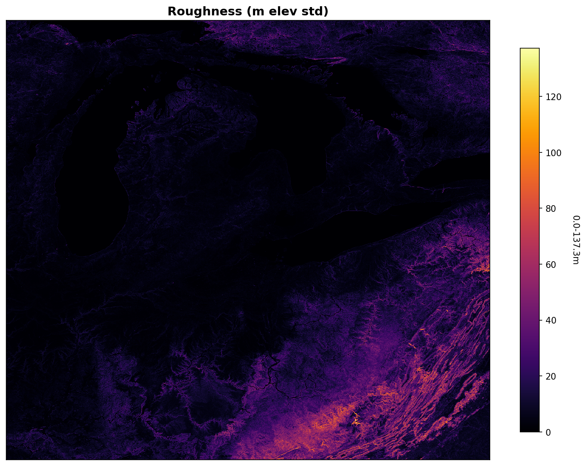
Dominant Aspect - Direction slopes face (compass direction):
Shows which way slopes face:
- Light colors: North-facing (shadier, retains more snow)
- Dark colors: South-facing (sunnier, more melt)
- North-facing aspects often have better sledding

Aspect Strength - Consistency of aspect direction:
Shows how uniform the slope direction is:
- High values: All slopes face the same direction
- Low values: Slopes face mixed directions
- Affects snow retention patterns
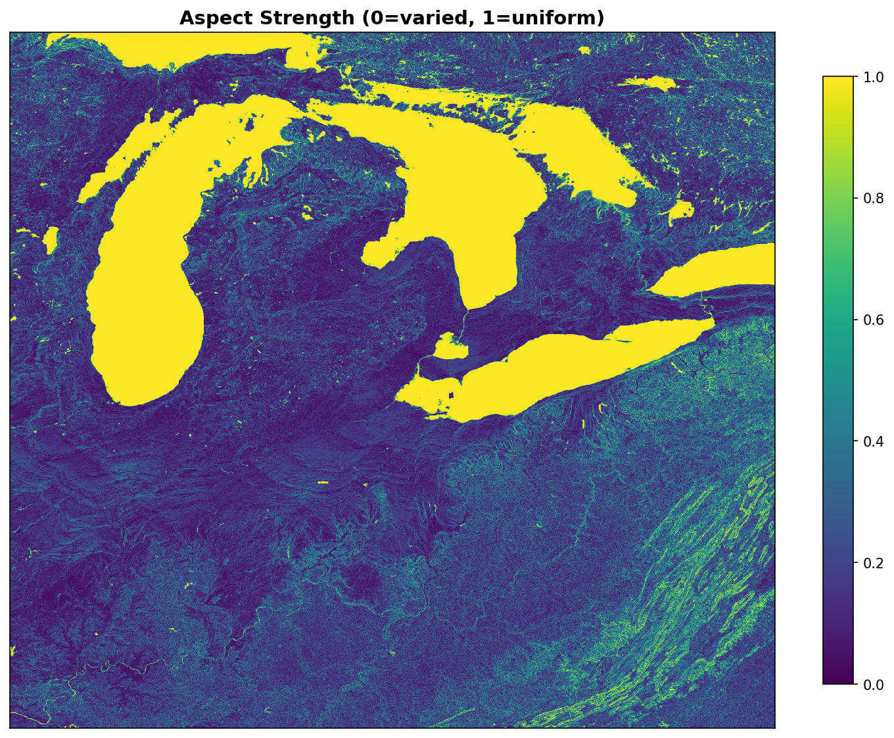
Stage 4: Slope Penalties Analysis¶
Raw slope statistics are transformed into a sledding score with penalties for hazards:
Base Slope Score - Trapezoidal scoring function on slope mean:
# Sweet range: 5-15° (ideal sledding slope)
# Ramp range: 3-25° (acceptable range)
# Outside ramp range: 0 points
slope_score = trapezoidal(slope_mean, sweet_range=(5, 15), ramp_range=(3, 25))

Cliff Penalty - Dealbreaker penalty for steep areas:
# If p95 slope > 25°, penalize heavily
# Applies smooth rolloff to avoid hard cutoffs
cliff_penalty = dealbreaker(slope_p95, threshold=25, falloff=10)

Terrain Consistency Penalty - Penalizes rough terrain:
# Combined penalty from roughness + slope variability
# Extreme roughness or high std deviation reduces score
consistency_penalty = terrain_consistency(roughness, slope_std)

Combined Penalties - Multiplication of all penalties:
# Final slope score = base × cliff_penalty × consistency_penalty
combined_penalty = cliff_penalty × consistency_penalty

Final Slope Score - Base score after all penalties:
final_slope_score = slope_score × combined_penalty
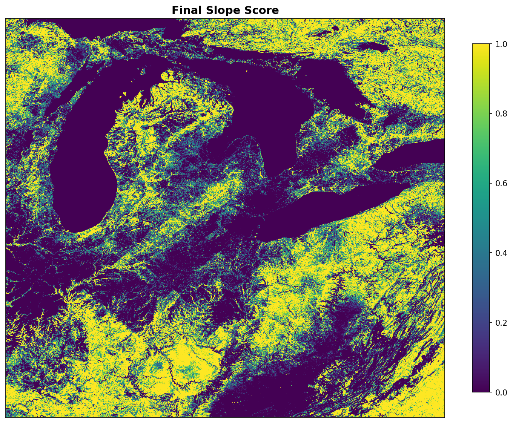
Score Reduction Map - Visual of penalty impact:
# Shows how much score was lost to penalties
# Yellow = high penalty, Black = low penalty
score_reduction = base_score - final_slope_score

Stage 5: Comprehensive Score Component Analysis¶
The final sledding score combines multiple components. The detailed analysis breaks these into 17 individual panels showing each transformation:
Additive Components (weighted sum = base score):
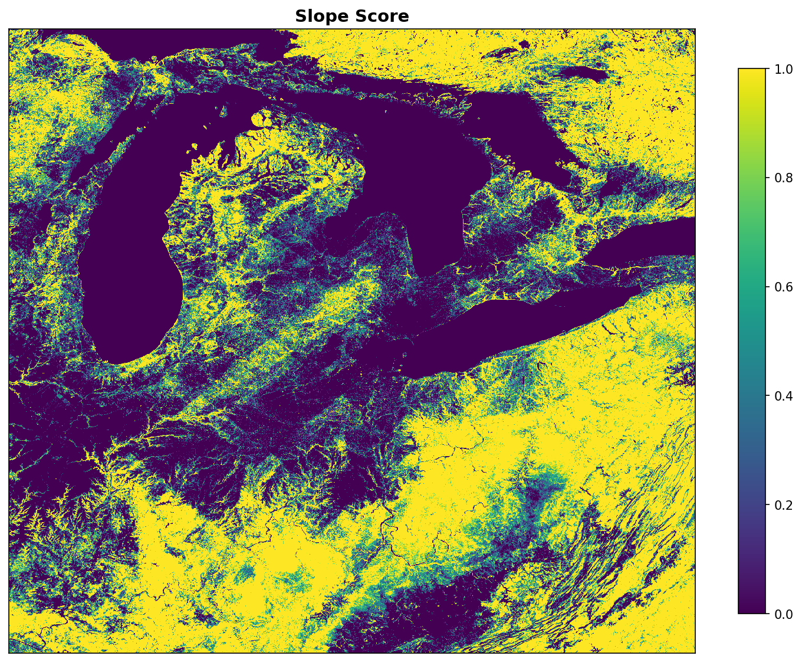 Slope Score (30% weight) - Weighted contribution from terrain slope
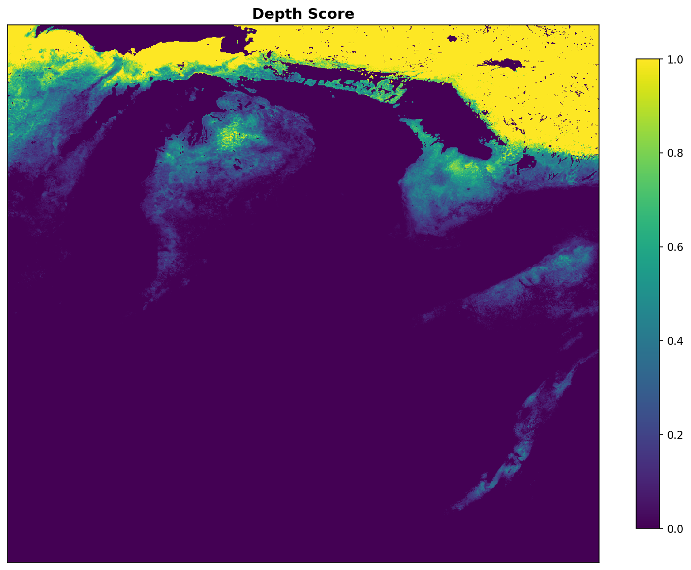 Depth Score (15% weight) - Deeper snow is better for sledding
 Coverage Score (25% weight) - Consistent snow coverage throughout season
Coverage Score (25% weight) - Consistent snow coverage throughout season
 Consistency Score (20% weight) - Low variability = reliable sledding
Consistency Score (20% weight) - Low variability = reliable sledding
Additional Components:
 Aspect Score (5% weight) - North-facing slopes retain more snow
Aspect Score (5% weight) - North-facing slopes retain more snow
 Runout Bonus (5% weight) - Flat areas (< 5°) provide natural run-out zones
Runout Bonus (5% weight) - Flat areas (< 5°) provide natural run-out zones
Multiplicative Penalties (applied as multipliers):
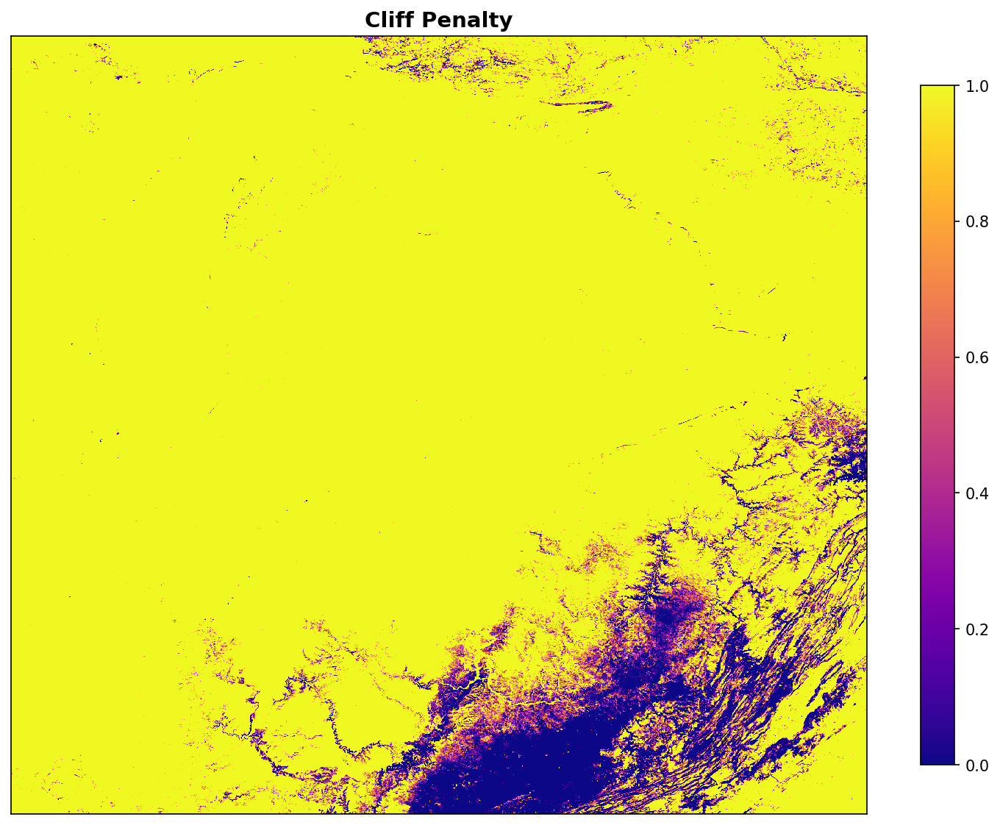 Cliff Penalty (×) - Reduces score if steep sections present
 Terrain Consistency (×) - Reduces score for rough, choppy terrain
Terrain Consistency (×) - Reduces score for rough, choppy terrain
Raw Input Data (for reference):
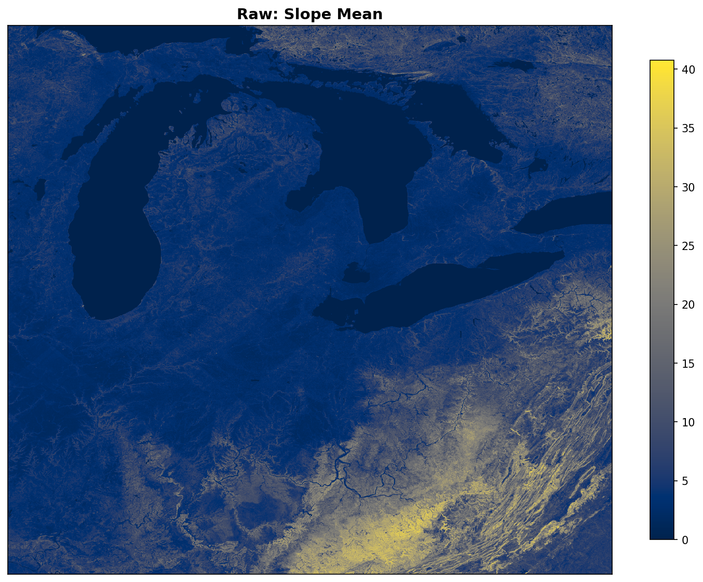 Raw: Slope Mean in degrees - Unscored terrain slope
 Raw: Snow Depth in mm - Unscored SNODAS measurements
Raw: Snow Depth in mm - Unscored SNODAS measurements
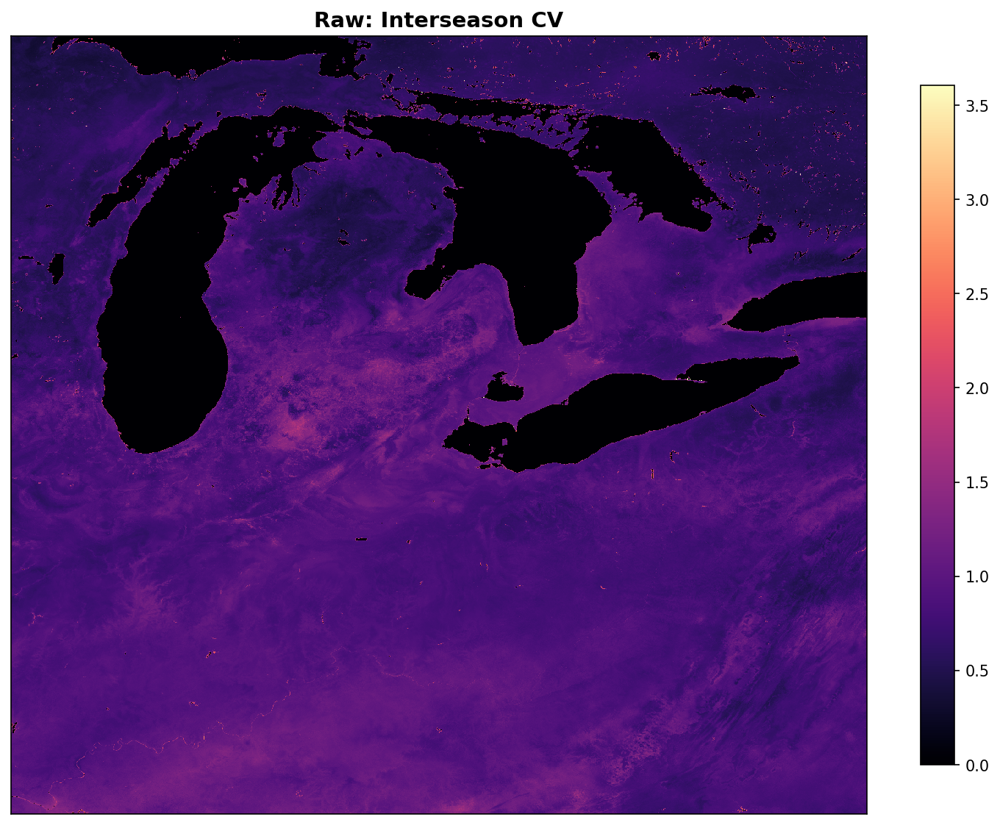 Raw: Interseason CV - Year-to-year variability coefficient
 Raw: Intraseason CV - Within-winter variability coefficient
Raw: Intraseason CV - Within-winter variability coefficient
Combination Steps (formula stages):
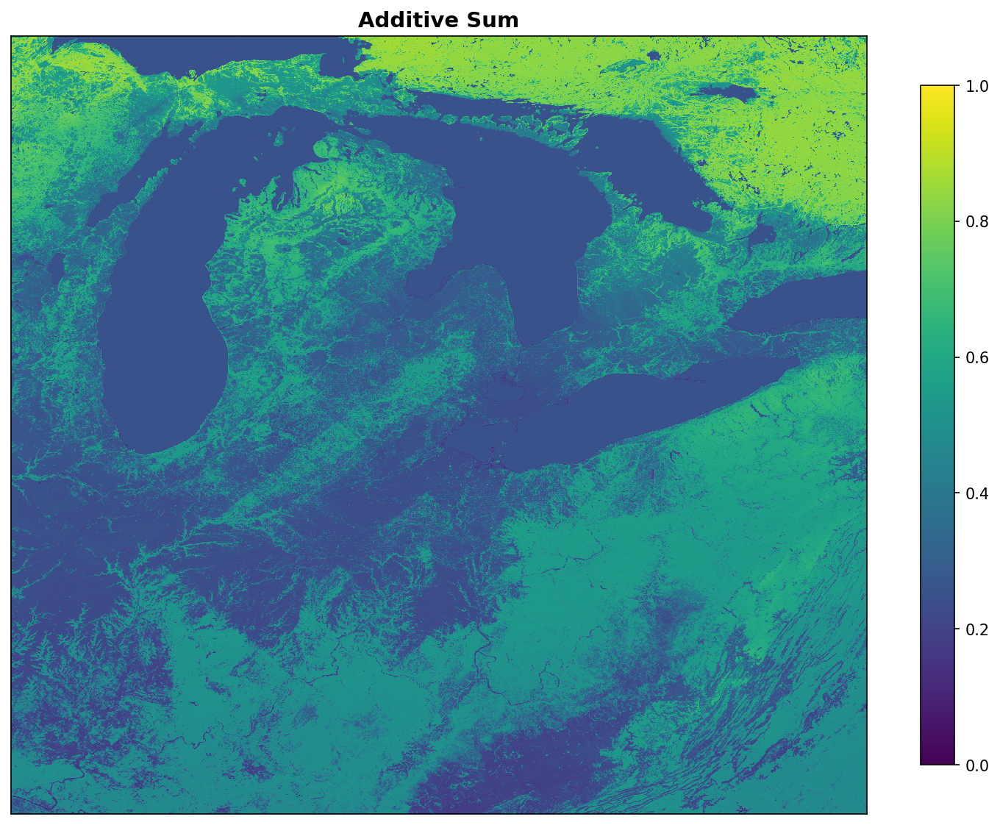 Additive Sum - Weighted combination of all additive components
 Multiplicative Product - Penalty multipliers (cliff × terrain consistency)
Multiplicative Product - Penalty multipliers (cliff × terrain consistency)
 Final Sledding Score - Complete suitability score (0-1 scale)
Final Sledding Score - Complete suitability score (0-1 scale)
 Score Reduction - How much penalty reduced the final score
Score Reduction - How much penalty reduced the final score
Scoring Formula:
The complete formula is generated and saved as markdown for documentation:
Sledding Suitability Score = (
0.30 × Slope Mean
+ 0.15 × Snow Depth
+ 0.25 × Snow Coverage
+ 0.20 × Snow Consistency
+ 0.05 × Aspect Bonus
+ 0.05 × Runout Bonus
) × Slope P95 Penalty × Terrain Consistency Penalty
See docs/images/04_score_components/equation.md for the exact formula.
Stage 6: Final Result¶
The final sledding score combines all factors into a single suitability map (0-1 scale). This is the primary output of the pipeline - a comprehensive assessment of sledding suitability across the entire region:
This map shows where sledding conditions are best. The colors represent suitability scores from 0 (poor) to 1 (excellent).
Score Interpretation: - 0.7-1.0 (Dark Yellow): Excellent sledding locations - 0.5-0.7 (Yellow-Green): Good sledding with some concerns - 0.3-0.5 (Green-Cyan): Moderate - marginal conditions - 0.0-0.3 (Dark Blue/Purple): Poor sledding potential
Additional Analysis Visualizations:
Understanding the score distribution helps identify optimal locations and assess regional variation:
 Histogram showing the distribution of sledding scores across all pixels, with quartile markers (25th, 50th, 75th percentiles)
Histogram showing the distribution of sledding scores across all pixels, with quartile markers (25th, 50th, 75th percentiles)
 Spatial distribution of score percentiles: shows which pixels fall into bottom 25% (red), 25-50% (orange), 50-75% (yellow), or top 25% (turquoise/blue) of scores
Spatial distribution of score percentiles: shows which pixels fall into bottom 25% (red), 25-50% (orange), 50-75% (yellow), or top 25% (turquoise/blue) of scores
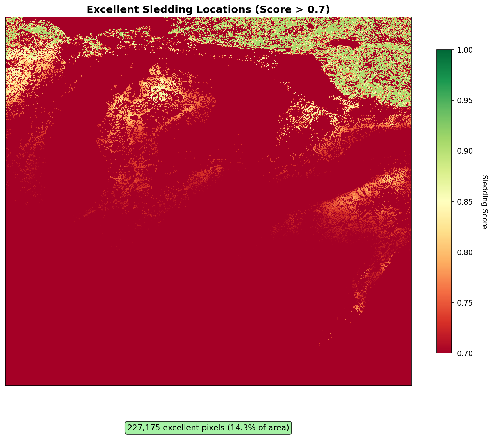 Filtered map highlighting only the excellent sledding locations (score > 0.7) - the most promising areas for sledding
Generating These Visualizations¶
All individual panels are generated automatically when you run the example:
# Generate all visualizations
uv run examples/detroit_snow_sledding.py --mock-data --all-steps
# Output structure:
# docs/images/
# ├── 01_raw/ # Input data
# │ ├── dem.png
# │ └── snow_depth.png
# ├── 02_slope_stats/ # 8 slope analysis panels
# ├── 03_slope_penalties/ # 6 penalty analysis panels
# ├── 04_score_components/ # 16 component + equation
# └── 05_final/ # Final sledding score
Each panel can be embedded in documentation, presentations, or analysis reports. The individual format makes it easy to explain each step of the pipeline in detail.
Why This Example Matters¶
Traditional snow analysis workflow: 1. Manually download SNODAS grids 2. Write custom reprojection code 3. Manually align snow data with terrain 4. Implement scoring algorithms 5. Handle coordinate system mismatches 6. Generate visualizations separately
With Terrain Maker + SnowAnalysis:
1. Point to SNODAS directory
2. Call process_snow_data()
3. Call calculate_sledding_score()
4. Visual outputs generated automatically
The example demonstrates: - ✓ Modular design: Snow analysis is separate from core terrain functionality - ✓ Data layer system: Automatic reprojection and metadata preservation - ✓ Multi-stage pipeline: Visual feedback at each step - ✓ Testing-friendly: Mock data enables fast TDD iteration - ✓ Production-ready: Real SNODAS integration with caching
Want to try it yourself? See Quick Reference for API documentation and API Reference for detailed function signatures.